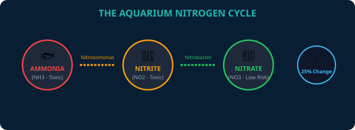

Beginner's Step-by-Step Guide
Starting your first aquarium is rewarding when done step by step. Follow this proven roadmap:
Choose a Suitable Tank Size
Beginners often mistakenly choose tiny bowls (< 10L). Larger aquariums (30L to 60L) dilute wastes better and keep temperature and water chemistry far more stable.
Set Up Your Equipment
Rinse gravel substrate thoroughly with clean water (no soap). Install the filter, heater, and thermometer. Fill with dechlorinated tap water and ensure the filter runs smoothly.
Cycle the Tank (Crucial Step!)
Never introduce fish into a freshly filled tank on day one. Allow 2 to 4 weeks for beneficial bacteria colonies to establish, converting toxic ammonia into harmless nitrates.
Add Fish Gradually
Introduce only 2 to 3 hardy fish first. Float the fish bag in the tank for 15-20 minutes to equalize water temperature before releasing the fish gently.
Aquarium Fish Feeding Guide
Proper nutrition ensures vibrant coloration, energetic swimming, and prevents water fouling.
The Golden 2-Minute Rule
Feed only the amount of food your fish can completely consume within 2 minutes. Any uneaten food sinks to the gravel and rapidly decays into toxic ammonia.
Diet Variety
Combine high-quality flake or pellet staple foods with occasional frozen bloodworms, daphnia, or spirulina greens for balanced vitamins and digestion.
Feeding Schedule
Feed adult fish once or twice daily. Providing one "fasting day" per week helps clear their digestive tract and promotes natural grazing behavior.
Water Quality & The Nitrogen Cycle
Water parameters are invisible to the eye; regular testing and water changes are the heart of fishkeeping.

Ideal Freshwater Parameters:
| Parameter | Target Range | Health Impact |
|---|---|---|
| Ammonia (NH3) | 0.0 ppm | Extremely toxic; causes gill burns and lethargy. |
| Nitrite (NO2) | 0.0 ppm | Toxic; impairs oxygen transport in fish blood. |
| Nitrate (NO3) | < 20 ppm | Low toxicity; managed via weekly 25% water changes. |
| pH Level | 6.5 – 7.5 | Must remain stable; sudden swings cause shock. |
| Water Temp | 24°C – 27°C | Maintained constantly using an automatic heater. |
Aquatic Plant Maintenance
Living plants act as biological powerhouses, absorbing fish nitrates and releasing oxygen.
Lighting Schedule
Run aquarium lights for 6 to 8 hours per day on a consistent timer. Running lights for more than 10 hours invites heavy green algae blooms.
Root Feeding vs Water Column Feeders
Plants like Amazon Swords absorb nutrients primarily through their roots (use root tabs). Epiphytes like Java Fern and Anubias feed directly from the water column.
Trimming & Pruning
Regularly snip dead or yellowing leaves near the plant base to direct vitality towards new, fresh green sprouts.
Common Mistakes to Avoid
Steer clear of these 4 classic pitfalls to keep your aquatic pets thriving:
Washing Filter Sponges Under Tap Water
Chlorinated tap water instantly kills the beneficial nitrifying bacteria living inside your filter. Always rinse filter sponges in old tank water removed during water changes.
Overstocking the Tank
Putting too many fish in a small tank quickly overloads biological filtration, depletes dissolved oxygen, and causes territorial stress.
Changing 100% of the Water at Once
Complete water changes cause severe temperature and chemical shock to fish. Stick to routine weekly 20% - 25% water changes.